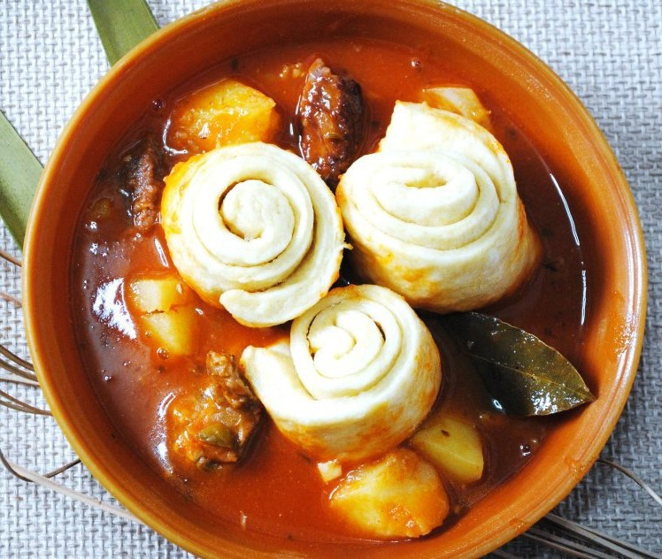
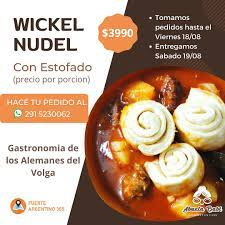

Receta de Wickel Nudel


Hacé tu pedido
Hoy vamos a preparar un plato característico de la gastronomía alemana que consta de una pasta en base a harina leudante que se cocina sobre un estofado de carne y papas. Los Wickel Nudel(fideo enrollado).
Ingredientes
- 1 kg harina leudante
- 2 huevos
- 1/2 litro leche
- 1 pisca sal
Elaboración paso a paso
- Preparar un estofado con carne (corte a elección), que llevará una buena cantidad de salsa líquida, rodajas de papas y zapallo cortado generosamente para que no desaparezca durante la cocción.
- Mezclar todos los ingredientes hasta obtener un bollo homogéneo y dejar reposar unos 30 minutos.
- Luego estirar con palo de amasar hasta lograr un espesor de 5 mm y un formato general rectangular para luego enrollar como si fuese un strudel.
- Una vez abierta la masa ya estirada se unta con una fina capa de aceite de girasol el total de la masa. El pequeño aporte de aceite cumple la función de que no se peguen las distintas capas de masa.
- Una vez abierta y untada con aceite comenzar a enrollar de un extremo al otro en forma prolija y uniforme, finalmente nos quedara una especie de strudel delante nuestro, del cual se cortaran ruedas de unos 4 cm de espesor quedando estéticamente como un 80 golpes y en este momento la masa estará lista para ser cocida.
- Volvemos a la olla del estofado que se va cocinando lentamente. Si las papas están a medio punto de cocción o dureza, es el momento de cocinar los rollos de pasta. Para tal fin deberemos retirar salsa de la olla y dejarla en otra aparte para poder ser utilizada luego en el emplatado.
- Retirado el líquido encontraremos un colchón de carne y papas, es importante que estos ingredientes estén visibles porque es ahí donde sentaremos los rollos de pasta con una separación de 2 cm entre sí.
- Es imprescindible que la pasta no quede sumergida en salsa y que la olla se tape de forma absoluta para que el vapor de salsa no se escape y cocine durante 30 minutos la pasta a fuego súper bajo.
- Transcurrido este periodo se destapará la olla y la masa cocida habrá aumentado un 60% su volumen. El plato está listo.
- Se servirá un Wickel Nudel (fideo enrollado) por plato con carne papas, zapallo y salsearemos con la salsa que retiramos anteriormente.
El estofado será el medio líquido en el cual, en su vapor, se cocinara la pasta. El mismo estará condimentado a gusto.